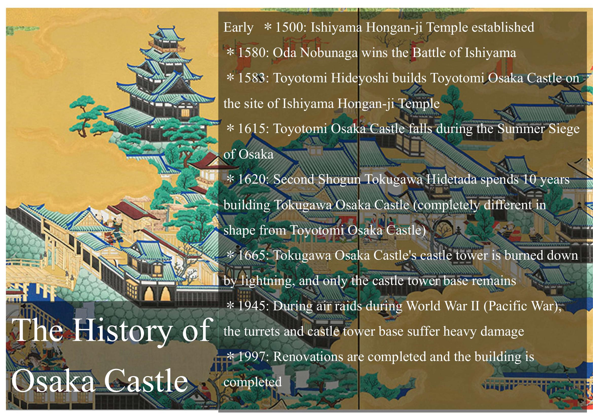
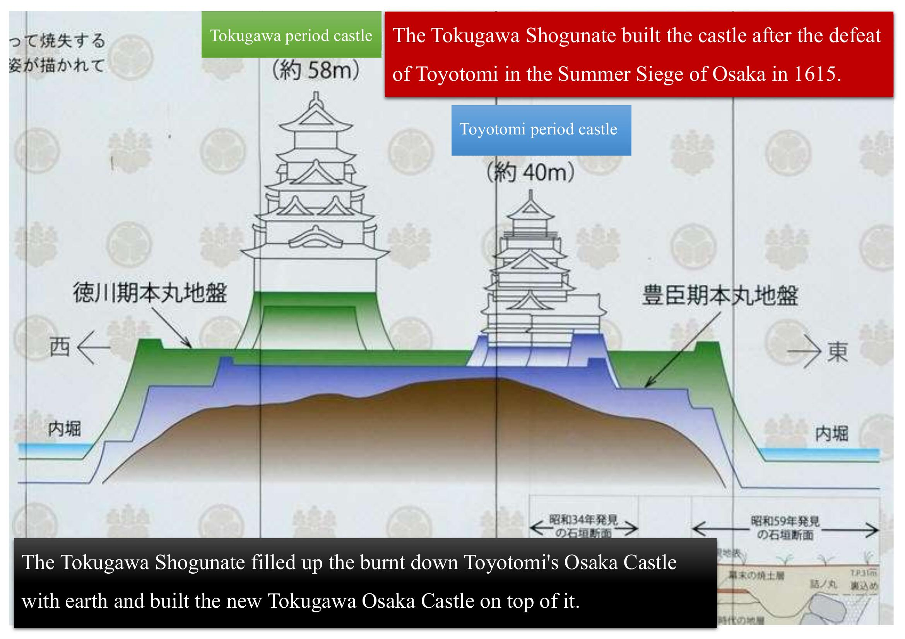

One coin. One castle. A story of ambition, siege, and rebirth — told at your own pace, starting from Tanimachi 4-chome.
What you're about to walk through isn't one castle's story — it's two. And the second one was built directly on top of the ashes of the first.

On one side, the Toyotomi — Hideyoshi's widow Yodo-dono and his son Hideyori, defending everything their family had built. On the other, the Tokugawa clan, determined to end them for good. In the summer of 1615, that conflict reached this exact ground — and when the smoke cleared, an entire era of Japanese history had ended with it.

After the siege, the Tokugawa didn't just rebuild — they buried Hideyoshi's entire castle under a fresh layer of earth, several meters deep, and raised their own castle on top of it. Every stone wall you'll see today sits on that hidden layer. Somewhere beneath your feet, the original Osaka Castle is still there.